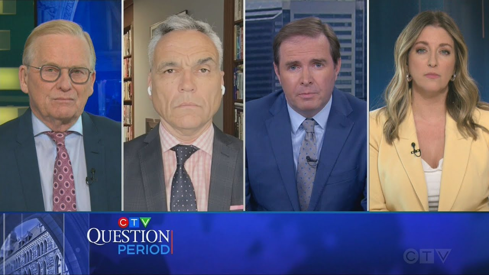

来B站一起耍【Global每日英语简报】
【审查卡尼总理的优先事项清单 | CTV问答时间】
Summary: Despite the lack of change in the overall headline balance in the house, things already feel very different. Here to talk about that is our scrum.
摘要： 尽管议会总体席位平衡未变，但氛围已大不相同。我们的专家小组将就此展开讨论。

⏱️ Estimated Reading Time: 14 min
Despite the lack of change in the overall headline balance in the house, things already feel very different.
尽管议会总体席位平衡未变，但氛围已大不相同。
Here to talk about that is our scrum.
我们的专家小组将就此展开讨论。
Bob Fe is the Glob and Males Ottawa bureau chief.
鲍勃·费是《环球邮报》渥太华分社社长。
Rob Benzy is the Queens Park bureau chief for the Toronto Star.
罗布·本兹是《多伦多星报》皇后公园分社社长。
And Ian White is the CTV News senior anchor and host of CTV Calgary News at 5.
伊恩·怀特是CTV新闻资深主播兼CTV卡尔加里五点新闻主持人。
Hi everybody.
大家好。
It's it's nice to see you.
很高兴见到你们。
Bob, we were saying before it feels like a million years since Monday.
鲍勃，我们之前说周一仿佛已是百万年前的事。
Sure does.
确实如此。
And there's a there's a lot that's happened in the interim.
期间发生了许多事情。
What is your overall impression of Mark Carney at this point, Prime Minister Mark Carney, and how you think he might demarcate himself?
你对马克·卡尼目前的整体印象如何，作为总理的他将如何界定自己的风格？
Well, look, I thought that was an incredibly impressive uh news conference that he had on Friday.
我认为他周五的新闻发布会令人印象深刻。
This was serious man who's come into the office and he says he wants to do things.
他是个认真的人，上任后明确表态要有所作为。
He says he's going to transform the Canadian economy, the biggest transformation in the Canadian economy since the Second World War.
他宣称要推动加拿大经济自二战以来最大规模的转型。
Now, those are big words to say, isn't it?
这些承诺相当宏大，不是吗？
Uh but he's talking about u major energy projects um and mining projects and and major efforts to change the way housing is done in this country uh and tax reform and you know what he's doing um and and I think I'll be interested to hear what Ian has to say but the what he's talking about in terms of the energy uh getting pipelines built and LG facilities built is going to think take a lot of the poison out of the what we see in the rise of western alienation and and and the separatist sentiment that we're seeing.
他提及重大能源与矿业项目、住房改革及税改，尤其在能源领域推动管道与液化天然气设施建设，或将缓解西部疏离与分离主义情绪。
But overall, you just got a sense that this is a guy who's coming here to do big things just like he said he was going to do.
总体而言，他给人的感觉是言出必行。
On the on the point that Bob's making, Ian, about, for example, the the rhetoric he employs around energy and building out energy capacity, my sense is, and you would know better than me, that those who do feel alienated or overlooked in Alberta want to see action because they've kind of heard rhetoric before.
伊恩，关于鲍勃提到的能源 rhetoric，阿尔伯塔被忽视的群体更期待实际行动而非空谈。
At the same time, it's certainly more rhetoric than we've heard from a liberal in a long time.
但这已是自由党长期未有的积极表态。
Along those lines, do you think it will take any of the poison out of what has become such a fraat issue between uh you know, Western Canada or in particular Alberta and Saskatchewan and uh and Ottawa?
这是否能缓解西部尤其是阿省、萨省与渥太华的紧张关系？
Well, one thing I find interesting about Mark Carney is that he grew up in Edmonton.
卡尼在埃德蒙顿长大的背景值得关注。
Uh he graduated from high school in Edmonton, and we haven't heard a lot about the fact he has Alberta roots, but uh the Liberals did score two victories, one in Calgary Confederation and one in Edmonton as well.
自由党在卡尔加里联邦区和埃德蒙顿的胜选或与此有关。
Corey Hogan, who has had ties with the oil patch in a communications capacity for a number of years, says there there there is some common ground here.
与油砂行业有联系的科里·霍根认为双方存在共识。
We can do some work with the oil patch.
可与能源行业展开合作。
Uh some senior executives at various Calgary oil companies put out what their demands essentially of looking toward more pipelines across Canada.
卡尔加里油企高管呼吁推进全国管道建设。
Cory Hogan says there are some possibilities there and that would involve him working with Mark Carney.
霍根指出合作可能性需与卡尼协同。
Uh, Benzy, I wanted to ask you a little bit about what else Mark Kernney said in that press conference in particular like if you are going to get this big stuff done and he certainly as one of my earlier panelists said did not seem to indicate anything would be incremental or that his vision is incremental in nature.
本兹，卡尼在发布会上强调变革非渐进式，你如何看待？
Uh, how will the house work?
议会将如何运作？
Because the the one thing like he he was speaking as though there was a clear majority.
他发言时似已拥有绝对多数。
He does still need four seats in order to pass stuff but it is only four.
实际仅需四席即可通过法案。
He said explicitly no deal with the NDP, which I thought was was very interesting.
他明确排除与新民主党合作，此举耐人寻味。
And he's also allowing for a bi-election as soon as possible.
并承诺尽快举行补选。
He basically said, I talked to Pierre Polyv.
他表示已与皮埃尔·波利耶夫沟通。
I said if that's what the party wants to do, no games, we'll go to a bi-election right away.
若保守党决定补选，将立即推进。
What do you read into all of that?
你如何解读？
I I thought that Mr. Carney at his best on Friday remind reminded me of Brian Maloney at his best when Maloney was all about big ambitious things whether it was the GST or or fighting acid rain.
卡尼让我想起布莱恩·穆罗尼推行GST与治理酸雨的魄力。
It was it was that business-like approach and Bob remembers that Bob covered uh Prime Minister Maloney and that it was weird like watching that press conference I really got some Maloney vibes in a positive way.
其务实作风与穆罗尼相似。
Uh I also thought that he was being showing a kind of uh uh a magnam magnanimous magnanimous magnanimous uh uh it's been a long week toward his you know he's gone from you know it's carbon tax carbon tax carney to magnanimous mark I guess if you're uh if you're PR poly because Mr. Paul is now going to be trudging around way Alberta in a bi-election.
其大度姿态与"碳税卡尼"形象形成反差，波利耶夫需在阿省补选中苦战。
Uh which, you know, would if the shoe were on the other foot, would the Tories have done that for a liberal who had been defeated?
若立场对调，保守党会否同样大度？
I don't know.
我不得而知。
Maybe, maybe they would, maybe they wouldn't have.
或许会，或许不会。
I just think that it was smart though because I think Canadians know we have some serious challenges and they don't want any games.
此举明智，国民期待务实应对挑战。
They don't want partisan they want parliament to work.
厌倦党派斗争，渴望议会正常运作。
It hasn't worked for a very long time.
议会失灵已久。
Vashi, you and I talked about this on Friday about how it just seems so different from Justin Trudeau.
与特鲁多风格截然不同。
He just seemed like a different beast.
他展现出截然不同的气质。
Uh, and he he's talking about getting rid of interprovincial trade barriers by by Canada Day.
承诺在加拿大日前消除省际贸易壁垒。
That's a big hard thing to do.
此举难度极大。
But I know that premers like Doug Ford here at Queens Park, they want to hear that kind of message.
但道格·福特等省长乐见此类表态。
They want to get stuff done because we have huge challenges in this country, not just with Donald Trump, but beyond that, we really need to take a good hard look at how this federation works.
联邦制改革迫在眉睫。
And I think that hopefully uh he can govern like he like he like he's not worried about every vote and having to sign stupid deals with the block or the NDP or relying on Elizabeth May to save his bacon.
望其施政无需依赖小党支持。
You know, it just it would be really nice for Canadians if Parliament worked.
议会正常运作将惠及全民。
Yeah, it'll be I I'm glad he attached some dates to everything because we we'll be able to judge that very in pretty short order.
为其设定时间表便于民众监督。
Bob, I I want to talk about the Conservatives, too, because they're going to meet on Tuesday.
保守党周二将召开会议。
Uh now Pierre Pyv is going to run in a bi-election in Alberta whenever that bi-election is called but the individual has stepped aside and in a very safe writing that they won with 81% of the vote.
波利耶夫将在阿省安全选区（得票率81%）参加补选。
Is his leadership in trouble at all, do you think?
其领导地位是否岌岌可危？
Well, first of all, Mr. Carney was very careful when asked if if they're trying to entice conservative NDP's members to join them so they can have a majority.
卡尼谨慎回应是否拉拢保守党/新民主党议员以获多数。
That would hurt Mr. Polyv's leadership right away.
此举将直接冲击波利耶夫领导力。
Um, look, I think u we have to be careful now to see whether he can hold on to that leadership or not.
需观察其能否保住领导权。
You're already seeing that conservative MPs are now talking to reporters again and going on television programs again.
保守党议员已恢复媒体活动。
They were banned from doing so.
此前他们被禁止发声。
I don't think they came on ours to be fair, but I I don't think that they're in a situation where um they're going to want to be controlled the way uh they have been.
议员们或不再接受严格管控。
And uh it's going to take some time to see uh whether he can hold on to the leadership or not.
领导权归属尚需时间检验。
Uh sometimes this takes a period of time to be able to see how he responds.
其应对方式至关重要。
If he's going to be as bullying self to caucus, he's going to have difficulty.
若继续威逼同僚将处境艰难。
He also faces a mandatory leadership review in the fall.
今秋将面临强制领导力审查。
And you know, who knows what's going to happen in a leadership review.
结果难料。
So I I I think he's safe for now, but I wouldn't put any money on it.
目前或安全，但变数仍存。
The for now is is probably important there.
"目前"二字很关键。
You're in the heart of conservative support, Ian.
伊恩，你身处保守党腹地。
What is your sense of and I remember being in Calgary after Erin Otul lost for example they turned pretty quick on Aaron Tul.
例如奥图尔败选后卡尔加里态度急转，你对波利耶夫支持度如何评估？
They were not a fan of of his pivot to the center.
其向中间路线转变不受欢迎。
What is your sense of the level of support there uh for Pierre Palv?
当地对波利耶夫支持度如何？
Well, first of all, let's look at Battle River Crowoot.
以战河-乌鸦选区为例。
I don't know if it's the safest conservative riding in Canada, but it's got to be in the top 10.
虽非最安全选区，但稳居前十。
like to give you a picture of this riding.
该选区特征鲜明。
It's enormously rural.
高度乡村化。
The three biggest towns are Waywright, Drumheller, and Camros.
主要城镇为韦里弗特、德拉姆黑勒与坎罗斯。
Uh it is basically wheat farms, cattle ranches, and oil rigs as far as the eye can see.
放眼望去皆麦田、牧场与油井。
Uh the incumbent there who's stepping aside, Damen Kurrick, is a farmer himself.
现任议员达蒙·库里克本人就是农民。
Uh he's going back to his day job.
他将回归本职。
He got 81% of the vote.
其得票率达81%。
The Liberals actually more than doubled their vote in this election in Battle River Crowoot up to 11% a whopping 11%.
自由党得票率翻倍至11%。
Okay.
嗯。
So, so no doubt uh Pierre Polyv is going to be in the House of Commons again.
波利耶夫重返众议院毫无悬念。
But yeah, there that is the question.
但问题在于后续。
Looking beyond that, I guess the test is he gets a seat by maybe as early as late June and then he has the whole summer barbecue season to come out here to the Calgary Stampede and maybe the CNE and whatever, you know, functions the politicians go to in the summer and then the real test is by the fall and and we'll have to see what happens then.
补选或于六月举行，夏季政治活动与秋季才是真正考验。
Last word to you, Rob.
罗布，请总结。
Yeah.
好的。
Yeah.
嗯。
I mean, I think he's got his challenges uh in front of him.
他面临严峻挑战。
I mean, and you know what, they they were spinning a lot.
保守党竭力粉饰败选。
I thought that interview you had with Andrew Shear on Power Play was extraordinary.
你与安德鲁·希尔的访谈发人深省。
Them spinning about how he did so well.
他们夸耀其得票数。
He got more votes than Brian in 1988 or since anyone since in 88.
称其得票超1988年穆罗尼。
He got more votes than Harper in 2011 when Harper had a majority.
甚至超过2011年哈珀多数政府时期。
But they still finished second and they still lost their fourth election in a row.
但仍连续第四次败选。
And they still blew a 28 percentage point lead uh in the polls on January 1st.
且浪费了1月28个百分点的民调优势。
They were up by 28 points.
领先优势达28%。
So I I don't know if I'm them.
换作是我...
They should be licking their wounds.
他们应舔舐伤口。
And I do think Vashy, they need to show some humility that we haven't really seen yet from them.
需展现谦卑姿态。
Tuesday will be mustsee TV for a few reasons.
周二会议因特朗普因素更值得关注。
President Trump and Conservative caucus.
特朗普与保守党团会议。